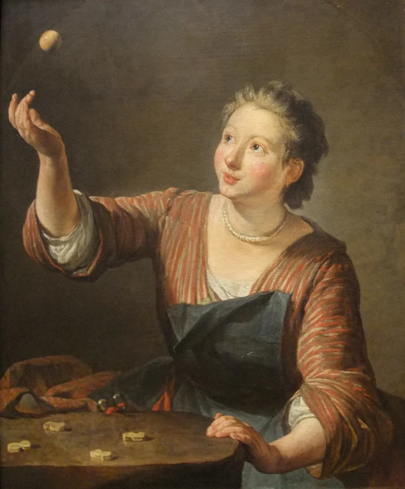
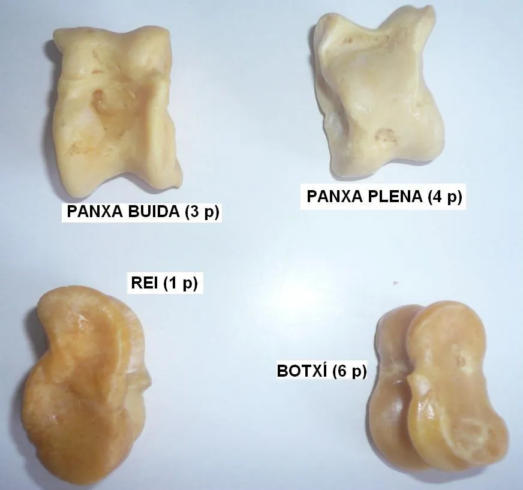
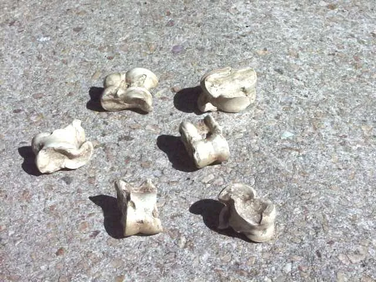
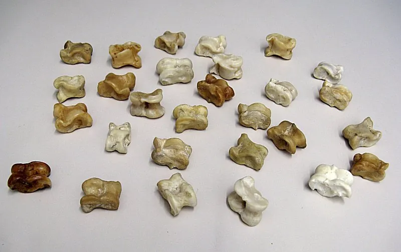
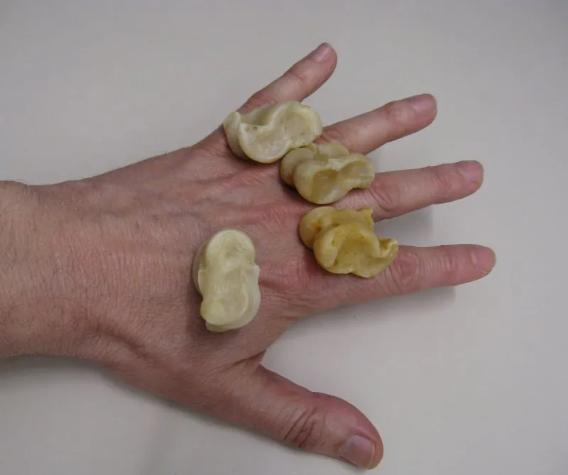
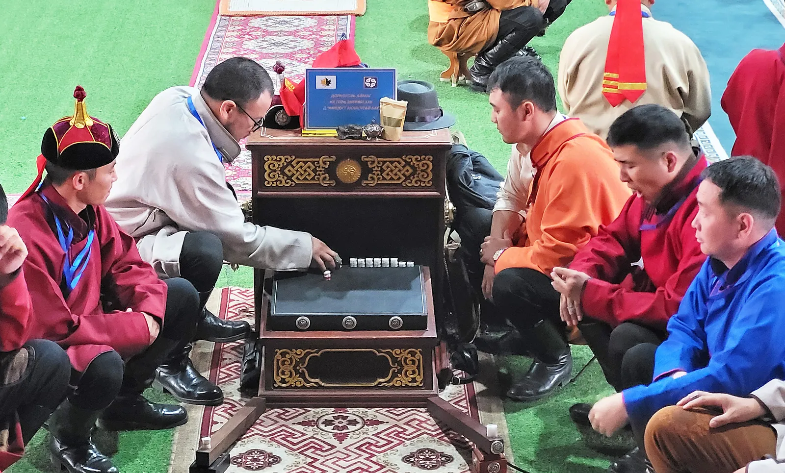
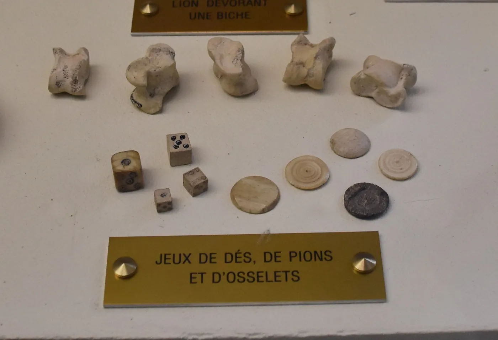
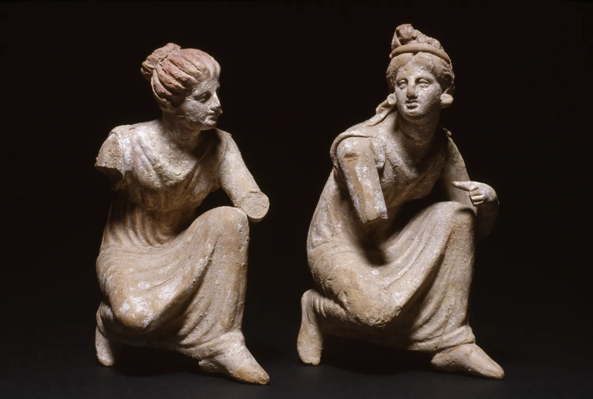

Joc tradicional de la cultura popular
Les tabes
Les tabes són un petit os del turmell de l’ovella o de la cabra: l’astràgal. Des de fa milers d’anys s’han fet servir per jugar a jocs d’habilitat, de rols i d’atzar. Aquí descobriràs què són, com s’aconsegueixen i es preparen, com s’hi juga i per què formen part del patrimoni lúdic popular.
- 4 carespanxa, forat, rei i botxí
- 5 tabesen el joc d’habilitat
- Més de 6.000 anysd’astràgals trobats en jaciments

Recorregut
Tot el que trobaràs

01 · La peça
Què són
Les quatre cares, l’anatomia, els noms a cada territori i una línia del temps amb dates.

02 · Matèria primera
Obtenció
Quin os cal demanar a la carnisseria i què cal dir perquè no el serrin.

03 · Taller
Preparació
Sis passos per netejar, blanquejar i decorar les tabes, amb les mesures de seguretat.

04 · A jugar
Jocs
Els nivells del joc d’habilitat dibuixats pas a pas, el rei i botxí i el joc d’atzar.

05 · Mapa
Pel món
Shagai, osselets, taba criolla, gonggi… El mateix joc en altres cultures.

06 · Aula
Educació
Un laboratori de probabilitat per llançar tabes virtuals i registrar les reals.

07 · Sorpreses
Curiositats
Veritat o mentida? Històries antigues amb la seva font.

08 · Imatges
Galeria
Art, arqueologia i tabes reals, amb l’autoria i la llicència de cada imatge.